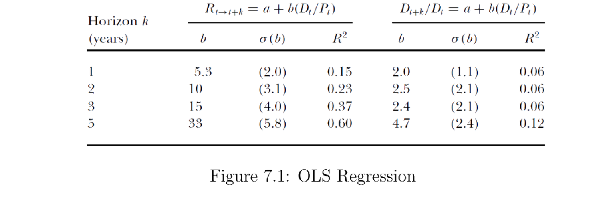
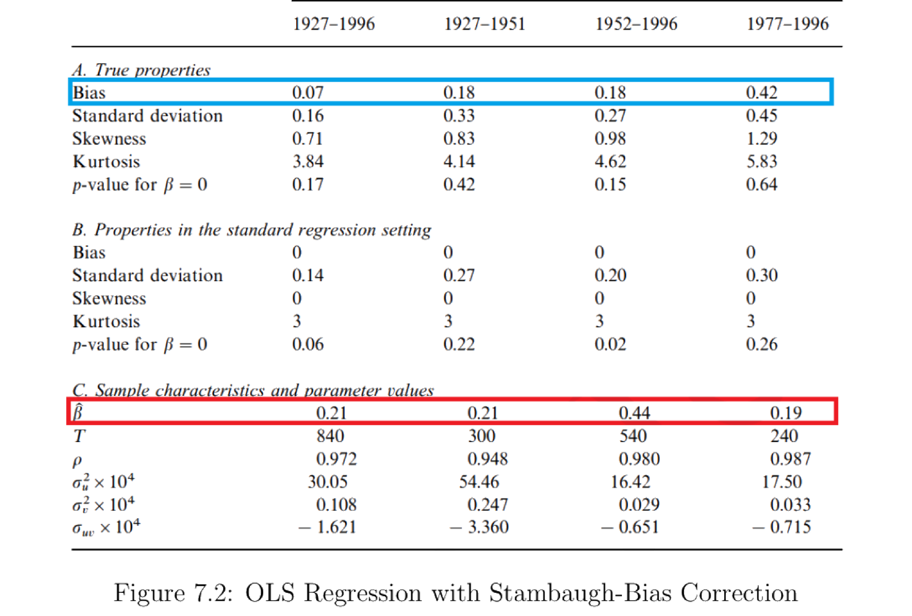

7. Present Value Decomposition
本章用现值分解把"价格-红利比 (price-dividend ratio) 为何波动"这个问题拆开。核心工具是 Campbell–Shiller 对数线性分解：把价格-红利比恒等地写成未来红利增长（现金流）与未来收益（贴现率）两部分的折现和。实证发现：红利增长几乎不可预测，而收益高度可预测——所以价格-红利比的波动主要反映预期收益（贴现率）的变动，而非现金流。随后讨论预测回归与 Stambaugh 有限样本偏差修正，再用移动平均 / VAR 框架把各冲击的脉冲响应分解为现金流部分与收益部分，并给出一个完整的幂效用 VAR 算例。
This chapter uses present-value decomposition to take apart the question "why does the price-dividend ratio move?" The key tool is the Campbell–Shiller log-linear decomposition: write the price-dividend ratio identically as the discounted sum of future dividend growth (cash flow) and future returns (discount rates). Empirically, dividend growth is nearly unpredictable while returns are highly predictable — so price-dividend ratio movements mainly reflect variation in expected returns (discount rates), not cash flows. We then cover predictive regressions and the Stambaugh finite-sample bias correction, and use a moving-average / VAR framework to split each shock's impulse responses into a cash-flow part and a return part, ending with a full power-utility VAR worked example.
7.1 Return Predictability
7.1.1 The Campbell-Shiller Decomposition
回忆 \(t+1\) 期总收益 \(R_{t+1}\equiv\dfrac{P_{t+1}+D_{t+1}}{P_t}\)，整理为
Recall the period-\(t+1\) gross return \(R_{t+1}\equiv\dfrac{P_{t+1}+D_{t+1}}{P_t}\), rearranged as
$$R_{t+1}=\frac{D_{t+1}}{D_t}\cdot\frac{1+\frac{P_{t+1}}{D_{t+1}}}{\frac{P_t}{D_t}}.\tag{7.1}$$
记小写为对数：\(r_{t+1}=\ln R_{t+1}\)，价格-红利比的对数 \(z_t\equiv\ln\frac{P_t}{D_t}=p_t-d_t\)。取对数得
Lower case denotes logs: \(r_{t+1}=\ln R_{t+1}\), and the log price-dividend ratio \(z_t\equiv\ln\frac{P_t}{D_t}=p_t-d_t\). Taking logs,
$$r_{t+1}=d_{t+1}-d_t+\ln\big(1+e^{z_{t+1}}\big)-z_t.\tag{7.2}$$
对 (7.2) 在 \(\bar z\) 处对 \(z_{t+1}\) 做一阶线性近似，得 Campbell–Shiller 分解：
A first-order linear approximation of (7.2) in \(z_{t+1}\) around \(\bar z\) gives the Campbell–Shiller decomposition:
$$r_{t+1}\approx\kappa_0+\kappa_1 p_{t+1}+(1-\kappa_1)d_{t+1}-p_t,\qquad \kappa_1=\frac{e^{\bar z}}{1+e^{\bar z}},\quad \kappa_0=\ln(1+e^{\bar z})-\kappa_1\bar z.\tag{7.3}$$
Remark 7.1。 (7.3) 把 \(r_{t+1}\) 写成随机变量 \(d_{t+1},p_{t+1}\) 与已实现的 \(p_t\) 的函数。这不是说我们已知未实现的 \(d_{t+1},p_{t+1}\)；它只是一个必须成立的恒等式，\(r_{t+1}\) 本身也是随机变量。
把 (7.3) 改写成关于 \(p_t\) 的方程 (7.4)，并向前递归展开成伸缩和 (telescope sum) (7.5)：
Remark 7.1. (7.3) writes \(r_{t+1}\) as a function of the random \(d_{t+1},p_{t+1}\) and the realized \(p_t\). This does not say we already know the unrealized \(d_{t+1},p_{t+1}\); it is just an identity that must hold, and \(r_{t+1}\) is itself random.
Rewrite (7.3) as an equation for \(p_t\) (7.4) and iterate forward into a telescope sum (7.5):
$$p_t-d_t=-r_{t+1}+\kappa_0+\kappa_1 p_{t+1}+(1-\kappa_1)d_{t+1}.\tag{7.4}$$
$$p_t-d_t=\frac{\kappa_0}{1-\kappa_1}+\sum_{j=0}^\infty\kappa_1^j\big[(d_{t+1+j}-d_{t+j})-r_{t+1+j}\big],\tag{7.5}$$
需要横截性条件 (transversality condition) \(\lim_{T\to\infty}\kappa_1^T(p_{t+T}-d_{t+T})=0\)，即价格中无泡沫 (no bubble)。在 \(t\) 期取条件期望 (7.6)、(7.7)：
This requires the transversality condition \(\lim_{T\to\infty}\kappa_1^T(p_{t+T}-d_{t+T})=0\), i.e. no bubble in prices. Taking the period-\(t\) conditional expectation (7.6), (7.7):
实证上 \(\ln\frac{D_{t+1+j}}{D_{t+j}}\) 几乎为零（红利增长很平滑），所以第 1 部分近似为常数。于是当价格-红利比变动时，第 1 部分（现金流）几乎不动，必然是第 2 部分（人们对未来收益的预期）在变。这就是"贴现率变动"主导价格波动的核心结论。
Empirically \(\ln\frac{D_{t+1+j}}{D_{t+j}}\) is almost zero (dividend growth is smooth), so Part 1 is nearly constant. Thus when the price-dividend ratio moves, Part 1 (cash flow) barely changes, so it must be Part 2 (people's expectation of future returns) that changes. This is the central conclusion that "discount-rate variation" drives price movements.
7.1.2 Predictive Regression and Stambaugh-Bias Correction
把 (7.6) 写成 (7.8)（\(\rho_j=\kappa_1^j\)）：
Write (7.6) as (7.8) (with \(\rho_j=\kappa_1^j\)):
$$p_t-d_t=\kappa+\mathbb E_t\!\left[\sum_{j=0}^\infty\rho_j\big(\Delta d_{t+1+j}-r_{t+1+j}\big)\right].\tag{7.8}$$
为把这个（近似）恒等式拆成两块，看当前价格-红利比能预测 \(\Delta d_{t+1+j}\) 还是 \(r_{t+1+j}\)，跑两个预测回归：
To split this (approximate) identity into two parts — does the current price-dividend ratio predict \(\Delta d_{t+1+j}\) or \(r_{t+1+j}\) — run two predictive regressions:
$$\text{Regression 1:}\quad \Delta d_{t+1+k}=\alpha+\beta\,(p_t-d_t)+\varepsilon_{t+1+k}.\tag{7.9}$$
$$\text{Regression 2:}\quad r_{t+1+k}=\alpha+\beta\,(p_t-d_t)+\varepsilon_{t+1+k}.\tag{7.10}$$
Cochrane (2009) 用 1947–1997 样本给出 (7.9)、(7.10) 的 OLS 估计（图 7.1）。其中 \(R_{t\to t+k}\) 是价值加权美国 NYSE 指数超额收益（减去国库券利率），\(D_{t+k}/D_t\) 是 \(t\) 到 \(t+k\) 的实际红利增长，\(D_t/P_t\) 是价值加权红利价格比。
Cochrane (2009) gives OLS estimates of (7.9), (7.10) on the 1947–1997 sample (Figure 7.1). Here \(R_{t\to t+k}\) is the excess return of the value-weighted U.S. NYSE index (minus the T-bill rate), \(D_{t+k}/D_t\) is real dividend growth from \(t\) to \(t+k\), and \(D_t/P_t\) is the value-weighted dividend-to-price ratio.

图 7.1：OLS 回归 (Cochrane 2009)，样本 1947–1997。左半 \(R_{t\to t+k}=a+b(D_t/P_t)\) 为收益回归，右半 \(D_{t+k}/D_t=a+b(D_t/P_t)\) 为红利增长回归。收益的 \(R^2\) 随期限大幅上升（5 年达 0.60），红利增长的 \(R^2\) 几乎不变——价格-红利比预测的是收益（贴现率），而非现金流。
Figure 7.1: OLS regression (Cochrane 2009), sample 1947–1997. The left block \(R_{t\to t+k}=a+b(D_t/P_t)\) is the return regression; the right block \(D_{t+k}/D_t=a+b(D_t/P_t)\) is the dividend-growth regression. The return \(R^2\) rises sharply with horizon (0.60 at 5 years) while the dividend-growth \(R^2\) barely moves — the price-dividend ratio predicts returns (discount rates), not cash flows.
Stambaugh 偏差。 预测变量本身有自相关时，OLS 会有有限样本偏差。考虑系统 (7.11)：
Stambaugh bias. When the predictor is autocorrelated, OLS has a finite-sample bias. Consider the system (7.11):
$$r_t=\alpha_r+\beta r_{t-1+k}+\varepsilon_t,\quad x_t=\alpha_x+\phi x_{t-1}+\nu_t,\quad \begin{pmatrix}\varepsilon_t\\\nu_t\end{pmatrix}\overset{i.i.d.}{\sim}\mathcal N(\mathbf 0,\Sigma),\ |\phi|<1.\tag{7.11}$$
OLS 无偏要求 \(\mathbb E[x_{t-1}\varepsilon_t]=0\)。但对 \(x_t\)（如 \(D_t/P_t\)）的冲击往往也改变收益，故 \(\varepsilon_t\) 与 \(\nu_t\) 相关；又因 AR(1) 把 \(\nu_t\) 传递到 \(\forall j\ge0\) 的 \(x_{t+j}\)，使 \(\varepsilon_t\) 与 \(x_{t+j}\) 相关。于是有限样本中 OLS 的 \(\beta\) 有系统性偏差。
Stambaugh (1999) 修正：
OLS unbiasedness needs \(\mathbb E[x_{t-1}\varepsilon_t]=0\). But a shock to \(x_t\) (e.g. \(D_t/P_t\)) usually also changes the return, so \(\varepsilon_t\) and \(\nu_t\) are correlated; and the AR(1) transmits \(\nu_t\) to \(x_{t+j}\) for all \(j\ge0\), making \(\varepsilon_t\) correlated with \(x_{t+j}\). Hence a systematic finite-sample bias in the OLS \(\beta\).
Stambaugh (1999) correction:
$$\hat\beta_{\text{adj}}=\hat\beta_{\text{OLS}}+\gamma\,\frac{1+3\phi}{T},\qquad \hat\alpha_{\text{adj}}=\Big(\frac1T\sum_{t=1}^T r_t\Big)-\hat\beta_{\text{adj}}\Big(\frac1T\sum_{t=1}^T x_{t-1}\Big),\qquad \gamma\equiv\frac{\mathrm{Cov}(\varepsilon_t,\nu_t)}{\mathrm{Var}(\nu_t)}.$$

图 7.2：含 Stambaugh 偏差修正的 OLS 回归 (Stambaugh 1999)。有限样本偏差（蓝框）相对原始 OLS 系数（红框）在某些样本期相当大：偏差可占估计可预测性的一半（1952–1996），甚至翻转可预测系数的符号（1977–1996）。
Figure 7.2: OLS regression with Stambaugh-bias correction (Stambaugh 1999). The finite-sample bias (blue box) is large relative to the original OLS coefficient (red box) in some periods: it can account for half the estimated predictability (1952–1996) or even flip the sign of the predictability coefficient (1977–1996).
结论。 跑预测性 OLS 回归时应始终做 Stambaugh 偏差修正，结论才可信。
Takeaway. Always apply the Stambaugh-bias correction when running predictive OLS regressions to make the results convincing.
7.2 Moving Average Model
把 (7.3) 的近似当作等式 (7.12)：
Treat the approximation (7.3) as an equality (7.12):
$$p_t-d_t=\kappa_0+\kappa_1(p_{t+1}-d_{t+1})+(d_{t+1}-d_t)-r_{t+1}.\tag{7.12}$$
用 VAR / 状态空间刻画：状态向量 \(\mathbf x_t\) 服从一阶向量自回归 (7.13)，其中 \(\mathbf w_{t+1}\sim\mathcal N(\mathbf 0,\mathbb I)\) 是 \(K\) 维标准化冲击：
Model with a VAR / state space: the state vector \(\mathbf x_t\) follows a first-order vector autoregression (7.13), where \(\mathbf w_{t+1}\sim\mathcal N(\mathbf 0,\mathbb I)\) is a \(K\)-dimensional standardized shock:
$$\mathbf x_{t+1}=\mathbf A\mathbf x_t+\mathbf B\mathbf w_{t+1}.\tag{7.13}$$
迭代得 \(\mathbf x_t\) 为过去冲击的移动平均 (moving average) (7.14)：
Iterating, \(\mathbf x_t\) is a moving average of past shocks (7.14):
$$\mathbf x_{t+1}=\sum_{j=0}^\infty\mathbf A^j\mathbf B\,\mathbf w_{t-j+1}=A(L)\,\mathbf w_{t+1},\qquad A(L)=\sum_{j=0}^\infty(\mathbf A L)^j\mathbf B,\tag{7.14}$$
其中 \(L\) 为滞后算子。类似地记红利增长、收益、价格-红利比的移动平均表示 (7.15)–(7.17)：
where \(L\) is the lag operator. Similarly denote the moving-average representations of dividend growth, returns, and the price-dividend ratio (7.15)–(7.17):
$$d_{t+1}-d_t=\mu_d+\delta(L)\mathbf w_{t+1},\tag{7.15}$$
$$r_{t+1}=\mu_r+\rho(L)\mathbf w_{t+1},\tag{7.16}$$
$$p_{t+1}-d_{t+1}=\mu_{p-d}+\pi(L)\mathbf w_{t+1},\tag{7.17}$$
其中 \(\delta(z)=\sum_j\boldsymbol\delta_j z^j\) 等，\(\boldsymbol\delta_j,\boldsymbol\rho_j,\boldsymbol\pi_j\in\mathbb R^K\)。由 \(\boldsymbol\delta_0=\mathbf H_d'\)、\(\boldsymbol\delta_1=\mathbf G_d'\mathbf B\)、\(\boldsymbol\delta_2=\mathbf G_d'\mathbf A\mathbf B\) 可得 \(\delta(z)=\mathbf H_d'+\mathbf G_d'(\mathbb I-z\mathbf A)^{-1}\mathbf B\)。
把 (7.12)、(7.15)–(7.17) 联立，比较 \(\mathbf w\) 的系数得 (7.18)，再在 \(z=\kappa_1\) 取值得 (7.19)：
where \(\delta(z)=\sum_j\boldsymbol\delta_j z^j\) etc., with \(\boldsymbol\delta_j,\boldsymbol\rho_j,\boldsymbol\pi_j\in\mathbb R^K\). From \(\boldsymbol\delta_0=\mathbf H_d'\), \(\boldsymbol\delta_1=\mathbf G_d'\mathbf B\), \(\boldsymbol\delta_2=\mathbf G_d'\mathbf A\mathbf B\) we get \(\delta(z)=\mathbf H_d'+\mathbf G_d'(\mathbb I-z\mathbf A)^{-1}\mathbf B\).
Combining (7.12) and (7.15)–(7.17) and matching coefficients of \(\mathbf w\) gives (7.18); evaluating at \(z=\kappa_1\) gives (7.19):
$$\pi(z)\,z=\kappa_1\pi(z)+\delta(z)-\rho(z),\tag{7.18}$$
$$\pi(\kappa_1)\kappa_1=\kappa_1\pi(\kappa_1)+\delta(\kappa_1)-\rho(\kappa_1)\ \Rightarrow\ \delta(\kappa_1)=\rho(\kappa_1).\tag{7.19}$$
由 (7.16)，\(r_{t+1}=\mu_r+\boldsymbol\rho_0\mathbf w_{t+1}+\boldsymbol\rho_1\mathbf w_t+\cdots\)，其中只有 \(\mathbf w_{t+1}\) 与 SDF 协动（其余已实现），故 \(\boldsymbol\rho_0\) 最关键。由 (7.19) 可得 (7.20)：
From (7.16), \(r_{t+1}=\mu_r+\boldsymbol\rho_0\mathbf w_{t+1}+\boldsymbol\rho_1\mathbf w_t+\cdots\), where only \(\mathbf w_{t+1}\) covaries with the SDF (the rest are realized), so \(\boldsymbol\rho_0\) is the key. By (7.19) we obtain (7.20):
$$\boldsymbol\rho_0=\rho(\kappa_1)-\sum_{j=1}^\infty\boldsymbol\rho_j\kappa_1^j=\delta(\kappa_1)-\sum_{j=1}^\infty\boldsymbol\rho_j\kappa_1^j=\underbrace{\sum_{j=0}^\infty\boldsymbol\delta_j\kappa_1^j}_{\text{cash flow}}-\underbrace{\sum_{j=1}^\infty\boldsymbol\rho_j\kappa_1^j}_{\text{return predictability}}.\tag{7.20}$$
(7.20) 之所以有意思：\(\boldsymbol\rho_0\) 是收益对当期冲击 \(\mathbf w_{t+1}\) 的脉冲响应，但它不只是 \(\boldsymbol\delta_0\)（当期红利增长的脉冲），而等于未来全部红利增长脉冲（贴现的现金流变动）减去未来收益脉冲之和（收益可预测性）。
VAR 变量选择。 \(r_{t+1}\) 与 \(d_{t+1}-d_t\) 不能同时放进 VAR：要从 \(\mathbf y_t,\mathbf y_{t-1},\dots\) 反推冲击 \(\mathbf w_{t+1}\)，需 \(\mathbf M(z)\) 在 \(|z|<1\)（尤其 \(z=\kappa_1\)）满秩；但 \((1,1)\cdot\mathbf M(\kappa_1)=(1,1)(\rho(\kappa_1),\delta(\kappa_1))'\overset{(7.19)}{=}0\)，与满秩矛盾。故通常改用 \(d_{t+1}-d_t\) 与 \(p_{t+1}-d_{t+1}\)，或 \(r_{t+1}\) 与 \(p_{t+1}-d_{t+1}\) 做 VAR。
Why (7.20) is interesting: \(\boldsymbol\rho_0\) is the impulse response of returns to the contemporaneous shock \(\mathbf w_{t+1}\), but it is not just \(\boldsymbol\delta_0\) (the impulse of contemporaneous dividend growth) — it equals the sum of all future dividend-growth impulses (discounted cash-flow change) minus the sum of future return impulses (return predictability).
VAR variable choice. \(r_{t+1}\) and \(d_{t+1}-d_t\) cannot both go into the VAR: to recover the shock \(\mathbf w_{t+1}\) from \(\mathbf y_t,\mathbf y_{t-1},\dots\) we need \(\mathbf M(z)\) full rank for \(|z|<1\) (especially \(z=\kappa_1\)); but \((1,1)\cdot\mathbf M(\kappa_1)=(1,1)(\rho(\kappa_1),\delta(\kappa_1))'\overset{(7.19)}{=}0\), contradicting full rank. So one typically uses \(d_{t+1}-d_t\) with \(p_{t+1}-d_{t+1}\), or \(r_{t+1}\) with \(p_{t+1}-d_{t+1}\), for the VAR.
7.3 Example
7.3.1 Setup
考虑一个动态设定，观测向量与状态向量为
Consider a dynamic setting with observation and state vectors
$$\mathbf y_t=\begin{pmatrix}d_t-d_{t-1}\\ p_t-d_t\\ c_t-c_{t-1}\end{pmatrix},\qquad \mathbf y_t^*=\mathbf y_t-\mathbb E[\mathbf y_t],\qquad \mathbf x_t=\begin{pmatrix}\mathbf y_t^*\\ \mathbf y_{t-1}^*\end{pmatrix},$$
VAR 为 \(\mathbf x_t=\mathbf A\mathbf x_{t-1}+\mathbf B\mathbf w_t\)。投资者用幂效用，\(t\) 期价值
with VAR \(\mathbf x_t=\mathbf A\mathbf x_{t-1}+\mathbf B\mathbf w_t\). The investor has power utility, with time-\(t\) value
$$U_t=\sum_{s=0}^\infty\beta^s\frac{C_{t+s}^{1-\gamma}-1}{1-\gamma}.$$
7.3.2 Risk-Free Asset
SDF 为 \(m_{t+1}=\beta(C_{t+1}/C_t)^{-\gamma}\)，无风险总收益满足 \(\frac{1}{R^f_{t,t+1}}=\mathbb E_t[m_{t+1}]\)。定义对数无风险利率 \(r^f_{t,t+1}\equiv\ln R^f_{t,t+1}\)、\(c_t=\ln C_t\)，则
The SDF is \(m_{t+1}=\beta(C_{t+1}/C_t)^{-\gamma}\), and the risk-free gross return satisfies \(\frac{1}{R^f_{t,t+1}}=\mathbb E_t[m_{t+1}]\). Defining the log risk-free rate \(r^f_{t,t+1}\equiv\ln R^f_{t,t+1}\) and \(c_t=\ln C_t\),
$$r^f_{t,t+1}=-\ln\beta-\ln\mathbb E_t\!\left[e^{-\gamma(c_{t+1}-c_t)}\right].\tag{7.21}$$
由 \(\mathbf x_{t+1}=(\mathbf y_{t+1}^*,\mathbf y_t^*)'\sim\mathcal N(\mathbf A\mathbf x^*,\mathbf{BB}')\)，对数正态期望 (7.22)：
Since \(\mathbf x_{t+1}=(\mathbf y_{t+1}^*,\mathbf y_t^*)'\sim\mathcal N(\mathbf A\mathbf x^*,\mathbf{BB}')\), the log-normal expectation (7.22):
$$\mathbb E_t\!\left[e^{-\gamma(c_{t+1}-c_t)}\right]=e^{-\gamma\big([\mathbf A\mathbf x^*]_3+\mathbb E[c_{t+1}-c_t]\big)+\frac12\gamma^2[\mathbf{BB}']_{33}}.\tag{7.22}$$
代入 (7.21) 可见 \(r^f_{t,t+1}=-\ln\beta+[\mathbf A\mathbf x^*]_3+\mathbb E[c_{t+1}-c_t]-\frac12\gamma^2[\mathbf{BB}']_{33}\)，它含 \(\mathbf x^*\)，随时间变化（不是常数）。
Substituting into (7.21), \(r^f_{t,t+1}=-\ln\beta+[\mathbf A\mathbf x^*]_3+\mathbb E[c_{t+1}-c_t]-\frac12\gamma^2[\mathbf{BB}']_{33}\) — it contains \(\mathbf x^*\) and is time-varying (not constant).
7.3.3 Risky Asset
把 Campbell–Shiller (7.3) 当作等式 (7.23)，对风险资产（红利索取权）用 \(1=\mathbb E_t[m_{t+1}R_{t+1}]\) (7.24) 与 (7.23) 得 (7.25)：
Treating Campbell–Shiller (7.3) as an equality (7.23), and using \(1=\mathbb E_t[m_{t+1}R_{t+1}]\) (7.24) with (7.23) for the risky asset (a claim on dividends), we get (7.25):
$$r_{t+1}=\kappa_0+\kappa_1(p_{t+1}-d_{t+1})+(d_{t+1}-d_t)-(p_t-d_t).\tag{7.23}$$
$$\mathbb E[r_{t+1}]=\kappa_0+\mathbb E\big[\kappa_1(p_{t+1}-d_{t+1})+(d_{t+1}-d_t)-(p_t-d_t)\big].\tag{7.25}$$
证明 / Proof：\(\mathbb E[r_{t+1}]-r^f_{t,t+1}\) 是常数
扩展状态 \(\mathbf x_{t+1}=(\mathbf y_{t+1}^*,\mathbf y_t^*)'\sim\mathcal N(\mathbf A\mathbf x^*,\mathbf{BB}')\)，记 \(\bar{\mathbf x}=\mathbb E[\cdot]\)。取选择向量 \(\mathbf a'=(1,\kappa_1,-\gamma,0,-1,0)\)，则 \(\mathbf a'(\mathbf x_{t+1}+\bar{\mathbf x})\sim\mathcal N(\mathbf a'(\mathbf A\mathbf x^*+\bar{\mathbf x}),\mathbf a'\mathbf{BB}'\mathbf a)\)；再取 \(\mathbf b'=(1,\kappa_1,0,0,-1,0)\)。由对数正态把 (7.24) 写成
With the augmented state \(\mathbf x_{t+1}=(\mathbf y_{t+1}^*,\mathbf y_t^*)'\sim\mathcal N(\mathbf A\mathbf x^*,\mathbf{BB}')\) and \(\bar{\mathbf x}=\mathbb E[\cdot]\), take the selection vector \(\mathbf a'=(1,\kappa_1,-\gamma,0,-1,0)\), so \(\mathbf a'(\mathbf x_{t+1}+\bar{\mathbf x})\sim\mathcal N(\mathbf a'(\mathbf A\mathbf x^*+\bar{\mathbf x}),\mathbf a'\mathbf{BB}'\mathbf a)\); and take \(\mathbf b'=(1,\kappa_1,0,0,-1,0)\). The log-normal form of (7.24) is
$$0=\ln\beta+\kappa_0+\mathbf a'(\mathbf A\mathbf x^*+\bar{\mathbf x})+\tfrac12\mathbf a'\mathbf{BB}'\mathbf a,$$
而 (7.25) 写成 \(\mathbb E[r_{t+1}]=\kappa_0+\mathbf b'(\mathbf A\mathbf x^*+\bar{\mathbf x})\)。两式相减（并用 (7.21)），含 \(\mathbf x^*\) 的项恰好抵消，得 (7.26)：
while (7.25) is \(\mathbb E[r_{t+1}]=\kappa_0+\mathbf b'(\mathbf A\mathbf x^*+\bar{\mathbf x})\). Subtracting (and using (7.21)), the \(\mathbf x^*\) terms cancel exactly, giving (7.26):
$$\mathbb E[r_{t+1}]-r^f_{t,t+1}=-\ln\beta-\tfrac12\mathbf a'\mathbf{BB}'\mathbf a+\tfrac12\gamma^2[\mathbf{BB}']_{33}.\quad\blacksquare\tag{7.26}$$
由 (7.26) 显然 \(\mathbb E[r_{t+1}]-r^f_{t,t+1}\) 是随时间不变的常数——尽管无风险利率本身随时间变动，风险溢价在该对数正态设定下是常数。
直觉。 在幂效用 + 联合对数正态的设定里，所有时变都通过状态 \(\mathbf x^*\) 进入收益和无风险利率；两者相减时这些时变项抵消，剩下只由协方差结构（\(\mathbf{BB}'\)）决定的常数风险溢价。要得到时变风险溢价，需引入非正态或异方差等更丰富的结构。
By (7.26), \(\mathbb E[r_{t+1}]-r^f_{t,t+1}\) is a time-invariant constant — even though the risk-free rate itself varies over time, the risk premium is constant in this log-normal setting.
Intuition. Under power utility plus joint log-normality, all time variation enters returns and the risk-free rate through the state \(\mathbf x^*\); on subtraction these time-varying terms cancel, leaving a constant risk premium determined only by the covariance structure (\(\mathbf{BB}'\)). Obtaining a time-varying risk premium requires richer structure such as non-normality or heteroskedasticity.
References
- Campbell, J. Y. (2017). Financial Decisions and Markets: A Course in Asset Pricing. Princeton University Press.
- Campbell, J. Y. and R. J. Shiller (1988). The Dividend-Price Ratio and Expectations of Future Dividends and Discount Factors. The Review of Financial Studies 1(3), 195–228.
- Cochrane, J. H. (2009). Asset Pricing (Revised Edition). Princeton University Press.
- Cochrane, J. H. (2011). Presidential Address: Discount Rates. The Journal of Finance 66(4), 1047–1108.
- Stambaugh, R. F. (1999). Predictive Regressions. Journal of Financial Economics 54(3), 375–421.